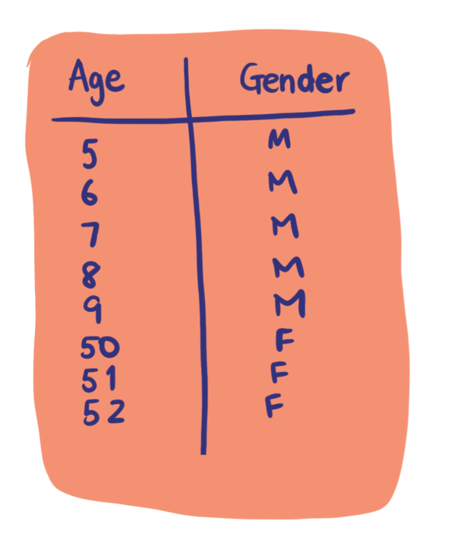
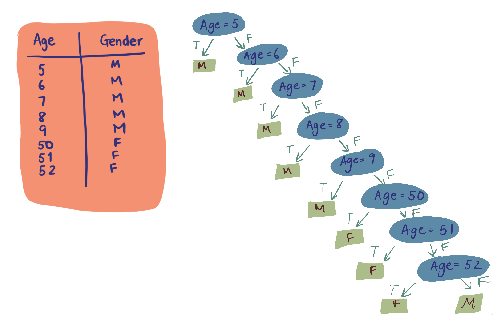
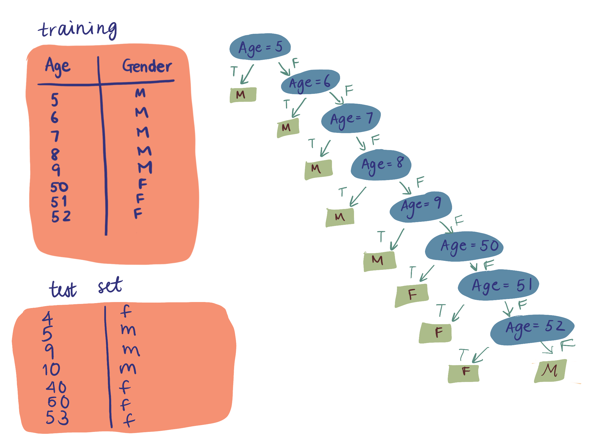
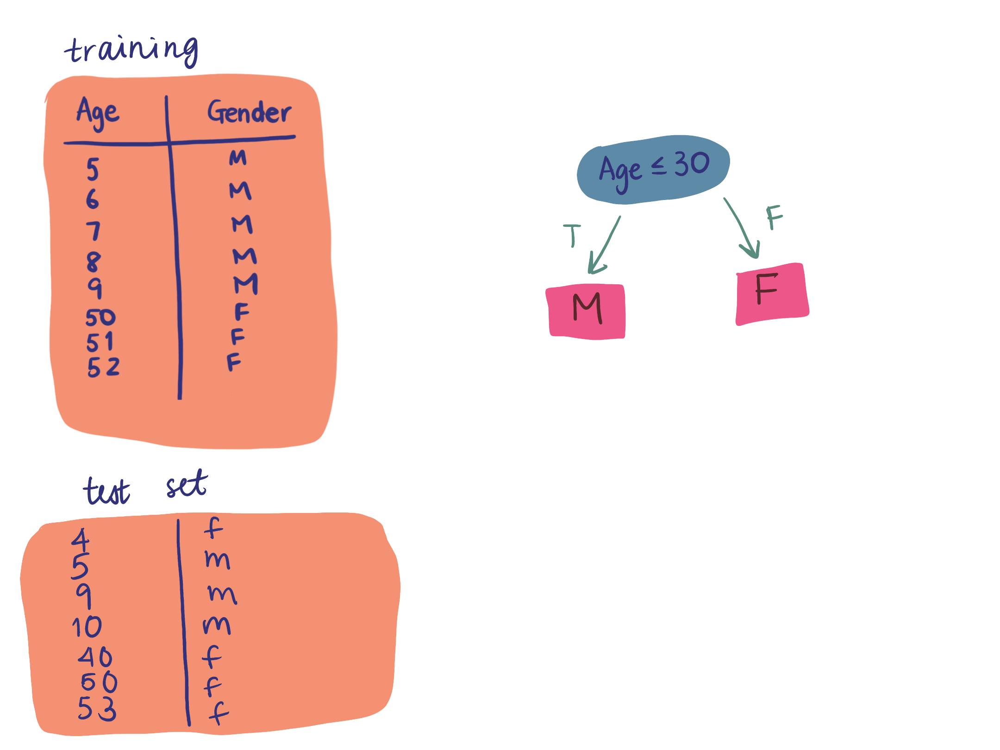

In the last blog post, we saw the basic layout of a decision tree and how each of the components of a decision tree relate to a dataset.
In this post, we'll look at two different ways decision trees can be chosen, and how they affect predictions.
I used the DataTalksClub YouTube series on decision trees as my main source for this post.
Here is a small dataset with one feature, "Age" and target "Gender". We see that the ages 5-9 are male and ages 50-53 are female. There are several ways we might create a decision tree based on this dataset. We'll look at two very different ways to choose the decision tree conditions which will give very different results.
One (bad) way we can create a decision tree is by being extremely specific in each of the nodes. In the decision tree below, we've accounted for all of the ages in the dataset.
If the person is 5 years old, then starting at the root node, the person goes down the "True" branch and the decision tree predicts that the person is "Male". This matches our dataset.
If the person is 7 years old, then starting at the root node, the person goes down the "False" branch since the person is NOT 5. Then, at the "Age=6" node, the person goes down the "False" branch again since the person is not 6 years old. Finally, the person goes down the "True" branch at the "Age=7" node since we see that the person is in fact 7 years old. Thus, the decision tree predicts the person is "Male", which matches the dataset. But what happens when the person's age is not accounted for in our dataset?
Let's now test our decision tree on a few points. We see that for people whose ages do not show up in the training set, the decision tree predicts these people as male. Sometimes this gives us the correct gender, but most of the time, this is incorrect. Our decision tree is too specific because it assumes that very specific ages are specific genders, and then it guesses that everybody else is male. Looking at the training set, we intuitively see that there's a pattern where younger people are male and older people are female.
Instead, let's choose one node, "Age less than or equal to 30". We see that this gives much better results in terms of generalizing to a test set. This is because we chose one node that fits a pattern, rather than many nodes that fits the training set exactly, but doesn't generalize well.
